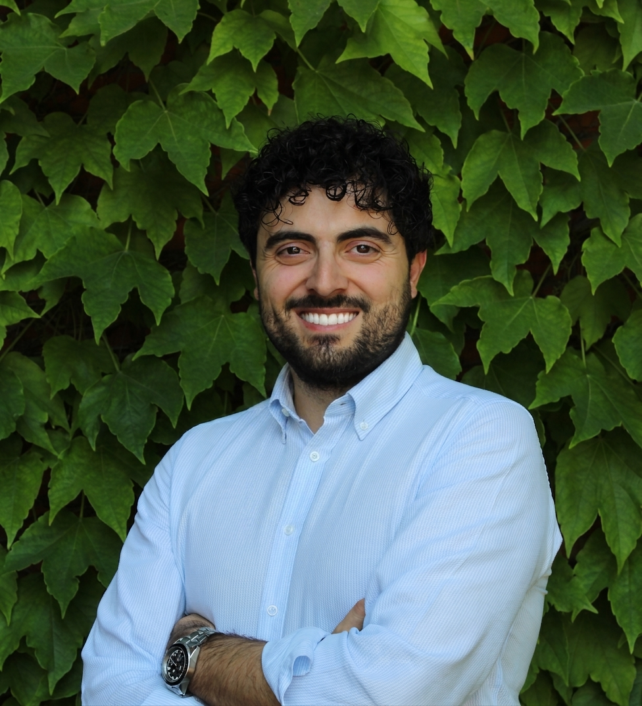
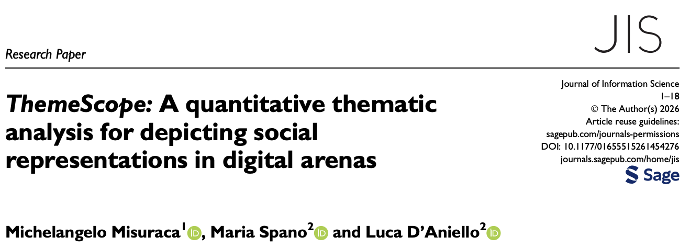
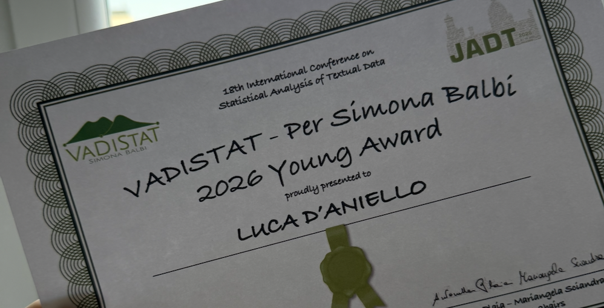
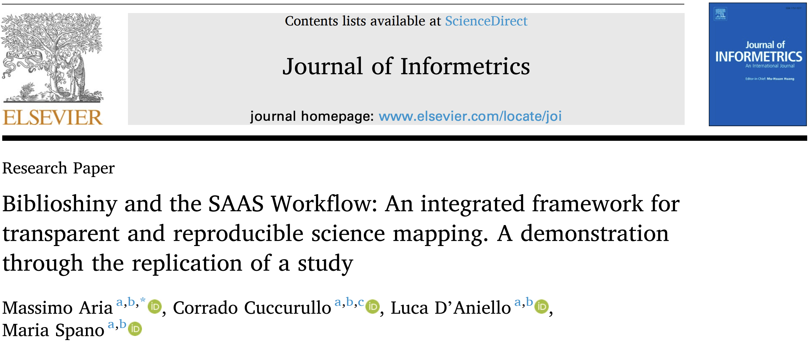

Assistant Professor (RTD-A)
Luca
D'Aniello
Assistant Professor (RTD-A) · Statistics for Social Sciences (STAT-03/B)
Department of Economics and Statistics (DiSES)
University of Naples Federico II

Latest News
View all
Paper

Jul 2026
TALL: Text Analysis for All, published in SoftwareX
Our official paper on TALL, the no-code R-Shiny app for text analysis, is out in SoftwareX.
Read more
Paper

17 Jul 2026
ThemeScope: mapping social representations in digital arenas
A new quantitative thematic-analysis method, and the themescopeR package, published in Journal of Information Science.
Read more
Award

10 Jul 2026
VADISTAT – Per Simona Balbi Young Award at JADT 2026
Honoured with the Young Award at JADT 2026 in Palermo for our work on social representations of climate change.
Read more
Paper

1 Jun 2026
Biblioshiny & the SAAS Workflow
A framework for transparent and reproducible science mapping, demonstrated by replicating a study, in Journal of Informetrics.
Read more